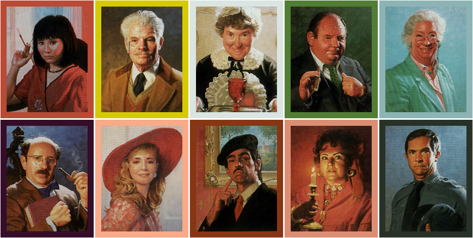

projects
the mousetrap
"The Mousetrap" is Agatha Christie's classic murder mystery tale. While working on publicity for this show, it was my job to catch the eye of as many potential audience members as possible, as well as give them a preview of the tone of the show. I created an array of assets to complete this goal, including two rounds of posters and FB promotional material.
The event cover photo
Background
I started the process by researching the show and discussing with directors their vision for the production. Though the show was about murder, it was more ultimately focused on the bizarre characters and their complex relationships that evolve over the course of the play. I decided to highlight these themes by utilizing elements of film noir and the boardgame "Clue" throughout the promotional materials.

I found images from film noir and "Clue" to help inspire publicity materials
Teaser Posters
The teaser posters focused on placing everyday objects in dramatically lit positions, implying their importance despite their seeming commonness. These objects would later be essential clues to figuring out who the killer is in the show. The posters served as a way to prepare viewers to consider what these objects meant, an answer that could only be found by attending the show.
The final teaser posters
Photoshoot
For the second round of posters, it was important to show the characters themselves, as their quirks and complexities were at the heart of what made this show so enjoyable. So, I had to coordinate with the hair and makeup team, the costumes team, as well as the actors, to make sure it happened. During the shoot, I asked each actor to get into character and answer a series of questions about how they reacted to parts in the show in order to accurately capture their motivations through the camera.
Some images from the photoshoot
Final Round of Promotional Materials
I was able to use the photos from the photoshoot to create the second round of posters, facebook deliverables, as well as programs and tickets, by manipulating the perspective of the characters' faces for each deliverable.
Reception
In the end, the event was marked "attenting/going" by 100 more people when compared to a show with identical scope last February. The show completely sold out its 75 seats during 3 out of the 4 performances, confirming the publicity was a success.
next project